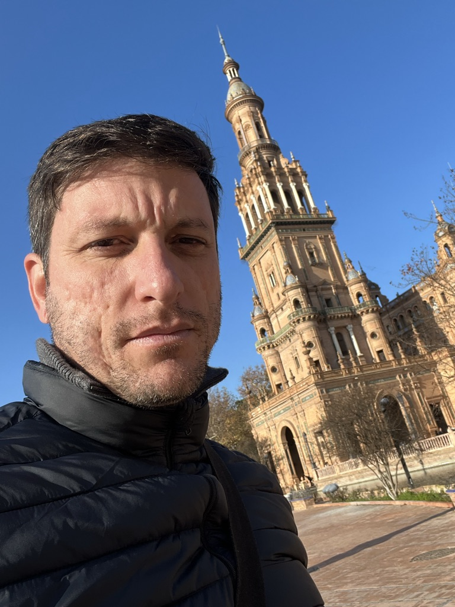

Quienes Somos
Contacto
Abel Guevara CV

Barbero y dueño
Barbería Habana 50´s - Badajoz, Badajoz provincia
mayo 2019 - Actualmente
Barbería de autor, donde me he desarrollado como administrador, barbero y formador.
Barbero y profesor de barbería
Kool Hair y Academia Hair (Luis y Tachi, Badajoz) - Badajoz, Badajoz provincia
octubre 2016 - abril 2019
Trabajé en esta empresa como barbero
y profesor de barbería impartiendo y a la vez aprendiendo todo lo relacionado con
el mundo de la barbería, desde color, tricología, corte(clásico y tendencias), barbas y afeitados,
compartiendo también
formaciones en diferentes ciudades de España.
Barbero
Azahara Palacin - Badajoz, Badajoz provincia
marzo 2016 - junio 2016
EDUCACIÓN Y FORMACIÓN
Bachillerato en Barbería
Badajoz, Badajoz provincia
octubre 2015
- octubre 2016
ABEL
GUEVARA
LANDA
Badajoz, Badajoz provincia
abelguevaralanda@yahoo.es
697695015
Dispuesto a trasladarse a: cualquier parte
APTITUDES, CONOCIMIENTOS
E IDIOMAS
• Comunicación
• Servicio de atención al cliente
• informática media
• inglés básico
Carlos Hernández CV
Atención y ejecución de todas las actividades de Relaciones Públicas
Asistencia y Atención a Delegaciones y visitas de funcionarios y personalidades al centro
Supervisión del envío de
materiales de propaganda y publicidad
Gestión y Trámite de documentación legal
Coordinar visitas a centros turísticos, culturales e históricos
Entidad: Fondo Cubano de Bienes Culturales
Periodo: 2014 – 2018
Cargo: Especialista de promoción y organización de eventos.
Funciones: